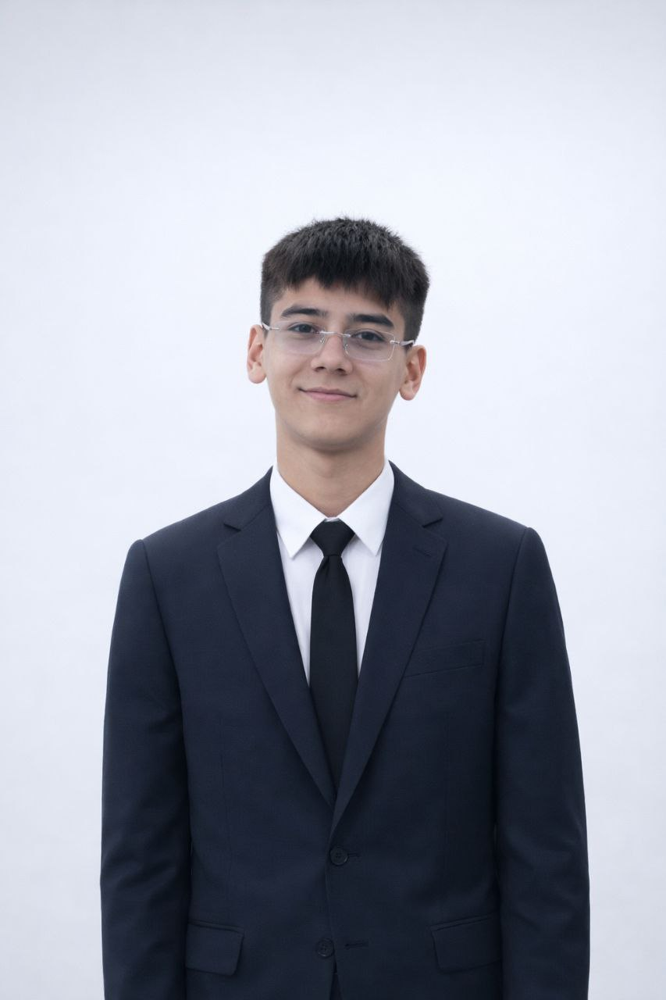

Men haqimda
Salom, men Saidxon — web dasturchiman.

3 yildan beri web dasturlash bilan shug'ullanaman. Ishimni oddiy, tushunarli va odamlar uchun qulay qilishga harakat qilaman — ortiqcha murakkablikdan qochib, aniq natijaga e'tibor beraman.
Frontendda foydalanuvchi tajribasi, backendda esa tizimning barqarorligi meni qiziqtiradi. Yangi texnologiyalarni o'rganishni va real muammolarni hal qiluvchi loyihalar ustida ishlashni yoqtiraman.
Ish vaqtimdan tashqari kitob o'qiyman, shaxmat o'ynayman va ochiq kodli loyihalarga hissa qo'shishga harakat qilaman.
Tajriba
-
Frontend dasturchi
Frilanser sifatida mijozlar uchun veb-saytlar va ilovalar yarataman. -
Junior dasturchi
Mahalliy IT-kompaniyada veb-ilovalar ustida jamoada ishladim. -
Dasturlashni o'rgandim
HTML, CSS, JavaScript asoslarini mustaqil o'rgandim.